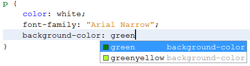

CSS
Introdução à CSS
Sumário: Introdução à CSS | Propriedades do CSS
O que é CSS?
O CSS (Cascading Style Sheet), Folhas de Estilo em Cascata, segundo a W3C, é “um mecanismo simples para adicionar estilos (por exemplo, cores e espaçamento) aos documentos web”.
Como utilizar o CSS?
O código CSS é separado do HTML e permite alteração das características da página;
Regras de estilo
Regras de estilo
Onde:
Seletor – determina o elemento que será estilizado;
Propriedade – define o que será estilizado;
Valor – define como o seletor será estilizado.
Regras de estilo
Observações:
Exemplo
< style type="text/css" media = "all" >
/*Isto é um comentário em CSS*/
p {
color: white;
background-color: green;
font-family: "Arial Narrow";
}
< / style >
O que é uma folha de estilo?
Conjunto de regras estilizadas aplicáveis às páginas de um website, com 3 possibilidades de utilização:
- Locais (inline) – dentro da tag de abertura do elemento de marcação;
- Incorporada (embedded) – a declaração é apresentada dentro da própria página
- Externa (linked) – a declaração é feita em um arquivo externo com extensão .css.
Estilos Inline
- As regras de estilo são escritas diretamente dentro da tag de abertura do elemento que será estilizado;
- Informações de estilo são definidas para apenas um elemento, utilizando-se o atributo style
- É o método menos recomendado porque as alterações devem ser feitas localmente:
< body >
< p style="color:white; font-family:Arial Narrow;
background-color: green; ">
Este parágrafo tem cor branca, fonte Arial Narrow e
fundo verde.
< / p >
< / body >
Estilos incorporados
- Neste método, a declaração da folha de estilos é realizada dentro da tag < head > e com o elemento style;
- A folha de estilos fica “incorporada” à tag < style > da página HTML na qual será aplicada:
< head >
< style type="text/css">
p {
color: white;
font-family: "Arial Narrow";
background-color: red;
}
< / style >
< / head >
< body >
< p > Este parágrafo tem cor branca, fonte Arial Narrow e fundo verde. < / p >
< / body >
Estilos incorporados: Fixação
- Crie 3 páginas HTML e, em cada uma delas, adicione a tag < p > e, dentro dela, adicione qualquer texto;
- Agora, em cada uma das 3 páginas, na tag < head >, adicione o seguinte estilo:
< head >
< style type="text/css" >
p {
color: white;
font-family: "Arial Narrow";
background-color: blue;
}
< / style >
< / head >
Estilos externos
- Neste método, ao contrário dos estilos incorporados, não há repetição de código;
- A declaração é definida em um arquivo externo, do tipo texto, com extensão .css;
- O arquivo .css contém as regras de estilo que podem ser aplicadas de uma só vez a todos os documentos do website;
- Existem 2 tipos de fazer referência aos estilos externos:
Folhas de estilos “linkadas” e;
Folhas de estilos importadas.
Estilos externos: referências
< head >
< link rel="stylesheet" type="text/css" href= "pathRelativoCSS"
media= "all" >
< / head >
< head >
< style type="text/css" >
@import url("css/estilo.css") all;
< style >
< / head >
Estilos externos

Estilos externos: fixação
- Remova os estilos incorporados do HTML, e em < head > adicione:
< link rel="stylesheet" type="text/css" href= "css/estilo.css" media= "all" >
- Crie um arquivo chamado estilo.css com a seguinte estrutura, e visualize o resultado:
p {
color: white;
font-family: "Arial Narrow";
background-color: red;
}
Unidades de medida
Quando valores são definidos para as propriedades CSS, são utilizadas algumas medidas que se dividem em dois grupos:
Grupos (Unidades de medida)
- in: polegada;
- cm: centímetro;
- mm: milímetro;
- pt: ponto.
- %;
- px: define o tamanho de um pixel no monitor;
- em: igual ao tamanho da fonte definido;
- ex: equivale à altura da letra “x” minúscula.
Unidades absolutas:
Unidades relativas:
Seletor: Universal
- Aplicado a todos os elementos de um documento;
- O uso mais comum é o estabelecimento de regras de estilo para “zerar” a estilização-padrão do navegador para todos os elementos HTML da página;
- O exemplo abaixo indica que todos os elementos que possuem o atributo color ficarão com a cor blue:
* {
color: blue;
}
Seletor: Tipo
- O estilo é aplicado a um determinado elemento da marcação (por exemplo, um parágrafo, uma div, etc);
- No exemplo abaixo, os parágrafos ficarão red, os cabeçalhos de nível 1 serão itálicos e os itens de uma lista ficarão em negrito:
p {
color: red;
}
h1 {
font-style: italic;
}
li {
font-weight: bold;
}
Seletor: class
- Permite a definição de vários estilos a um mesmo elemento:
li.vermelho {
color: red;
}
li.azul {
color: blue;
}
- No código HTML, a referência ao seletor class é feita da seguinte forma:
Seletor: class
< body >
< ul >
< li class="vermelho" > Item na cor vermelha < / li >
< li class="azul" > Item na cor azul < / li >
< / ul >
< / body >
Seletor: ID
- Denomina-se assim porque usa-se o atributo id no elemento HTML para criar um identificador único;
- Diferentemente do seletor class, ele deve ser aplicado a apenas um único elemento da página;
- No CSS:
h1#cab {
text-decoration: line-through;
background-color: pink;
}
Seletor: ID
- Na marcação HTML:
< body >
< ul >
< h1 > H1 usando seletor Tipo < / h1 >
< h1 id="cab" > H1 usando seletor ID < / h1 >
< / ul >
< / body >
Seletor: grupo
- Agrupa os seletores para minimizar o código CSS;
- Cada elemento é separado por uma vírgula;
- No CSS:
h2, h3, h4, h5 {
color: red;
}
Seletor elem1 elem2
- Usado para estilizar o elemento elem2 que está dentro do elemento elem1;
- No CSS:
div h1 {
text-decoration: underline;
background-color: yellow;
}
Seletor elem1 elem2
- Na marcação HTML:
< body >
< div >
< h1 > H1 dentro de uma div < / h1 >
< / div >
< / body >
CSS
Propriedades do CSS
Sumário:
Introdução à CSS |
Propriedades do CSS
Propriedades Font
Os nomes das propriedades Font são bem intuitivos:
- font-family
- font-size
- font-style
- font-weight – define o peso da fonte
- font – define todas as propriedades Font em apenas uma declaração.
Exemplo
p {
font-family: "Courier New", "MS Sans Serif", "Arial";
font-size: 12pt;
font-style: italic;
font-weight: bold;
}
Propriedades Background
background-color – atribui uma cor no plano de fundo de um elemento;
body {
background-color: yellow;
}
h1 {
background-color: #00ff00;
}
p {
background-color: rgb(255, 0, 255)
}
Propriedades Background
background-image – define uma imagem de fundo na página;
body {
background-color: yellow;
background-image: url('img/logoIFRN.jpg');
}
Propriedades Background
background-repeat – controla o comportamento de repetição da imagem de fundo;
body {
background: url('img/logoIFRN.jpg') fixed no-repeat center;
background-color: green;
}
Propriedades Border
border – pode ser usada para definir todas as propriedades de estilo de uma borda;
p {
border: 5px solid red;
}
Propriedades Border
border-style – define o estilo das quatro bordas;
p.none { border-style: none;}
p.dotted { border-style: dotted;}
p.dashed { border-style: dashed;}
p.solid { border-style: solid;}
p.double { border-style: double;}
p.groove { border-style: groove;}
p.ridge { border-style: ridge;}
p.inset { border-style: inset;}
p.outset { border-style: outset;}
p.hidden { border-style: hidden;}
Propriedades Border
border-color – define cor(es) para as bordas;
p.one {
border-style: solid;
border-color: #0000ff;
}
p.two {
border-style: solid;
border-color: #ff0000 #0000ff;
}
p.three {
border-style: solid
border-color: #ff0000 #00ff00 #0000ff;
}
p.four {
border-style: double
border-color: #ff0000 #00ff00 #0000ff rgb(255, 0, 255);
}
Propriedades Border
border-width – define a largura das quatro bordas;
p.one {
border-style: solid;
border-color: #0000ff;
border-width: 5px;
}
p.two {
border-style: solid;
border-width: medium;
}
Propriedades derivadas
- Border-Bottom: border-bottom-color, border-bottom-style, border-bottom-width
- Border-Left: border-left-color, border-left-style, border-left-width
- Border-Right: border-right-color, border-right-style, border-right-width
- Border-Top: border-top-color, border-top-style, border-top-width
Propriedades Border
border-radius – define uma forma arredondada para as bordas;
div {
border: 2px solid #a1a1a1;
padding: 10px 40px;
background: #dddddd;
width: 300px;
border-radius: 25px;
}
Propriedades Border
box-shadow – adiciona uma sombra em uma div;
div {
width: 300px;
height: 100px;
background-color: yellow;
box-shadow: 10px 10px 5px #888888;
border-radius: 10px;
}
Propriedades Text
color – define a cor do texto;
body {
color: red;
}
h1 {
color: #00ff00;
}
p.ex {
color: rgb(0, 0, 255);
}
Propriedades Text
direction – define a direção (rtl ou ltr) do texto;
div.direitaParaEsquerda {
direction: rtl;
}
Propriedades Text
line-height – define a altura da linha. É uma espécie de espaçamento entre linhas;
p.small {
line-height: 70%;
}
p.big {
line-height: 200%;
}
Propriedades Text
text-align – permite o alinhamento do texto à esquerda (left), à direita (right), centralizado (center) ou justificado (justify);
div {
width: 300px;
height: 100px;
background-color: silver;
box-shadow: 10px 10px 5px #888888;
border-radius: 10px;
}
p {
text-align: justify;
}
Propriedades Text
text-decoration – possibilita que sejam colocadas “decorações” no texto;
As estilizações são: texto sublinhado (underline), linha sobre o texto (overline), linha cortando o texto (line-through) e efeito “pisca” (blink );
h3.ov { text-decoration: overline;}
h3.th { text-decoration: line-through;}
h3.un { text-decoration: underline;}
h3.bl { text-decoration: blink;}
Propriedades Text
text-indent – define a identação da primeira linha em um bloco de texto;
#ex1 { text-shadow: 2px 2px red;}
#ex2 { text-shadow: 5px 5px #00ff00;}
#ex3 { text-shadow: -10px 10px red;}
#ex4 { text-shadow: 5px 5px 1px #00ff00;}
#ex5 { text-shadow: 5px 5px 3px #00ff00;}
Propriedades Text
text-shadow – coloca uma “sombra” no texto;
p {
text-indent: 50px;
text-align: justify;
}
Propriedades Outline
Definem a criação de contornos nos elementos e são semelhantes às bordas de um elemento:
- outline-style – define o estilo do contorno;
- outline-color – define a cor do contorno;
- outline-width – define a largura do contorno.
div {
outline-style: solid;
outline-color: red;
outline-width: thin;
background-color: silver;
}
Propriedades List
Definem estilização nos elementos de uma lista:
- list-style-image – define uma imagem como marcador:
ul {
list-style-image: url('sqpurple.gif')
}
- list-style-type – define o tipo do marcador:
ul.a { list-style-type: circle; }
ul.a { list-style-type: square; }
ol.a { list-style-type: upper-roman; }
ol.a { list-style-type: lower-alpha; }
Links
- É possível definir as propriedades de um link de acordo com o seu estado e incrementar a página com efeitos interessantes;
- Os estados podem ser: visitado, não visitado, ativo ou com o ponteiro do mouse sobre o link;
a {
text-decoration: none; /*Remove o sublinhado do link*/
}
a:link { color: green;}
a:visited { color: yellow;}
a:hover { color: black;}
a:active { color: blue;}
Pseudo-classe: link
- Esta pseudo-classe é usada para estilizar links não-visitados;
- No exemplo abaixo, enquanto os links não forem visitados eles permanecerão na cor verde:
a {
text-decoration: none; /*Remove o sublinhado do link*/
}
/*Enquanto o link não for visitado*/
a:link {
color: green;
}
Pseudo-classe: visited
- Usada para estilizar links visitados;
- No exemplo abaixo, depois que os links forem visitados ficarão na cor vermelha:
/*Depois que o link for visitado*/
a:visited {
color: red;
}
Pseudo-classe: active
- Usada para estilizar links ativos;
- No exemplo abaixo, quando um link estiver ativo a sua cor de fundo será amarelo:
/*Quando o link estiver ativo*/
a:active {
background-color: yellow;
}
Pseudo-classe: hover
- Usada para disparar o evento quando o ponteiro do mouse estiver sobre o link;
/*Quando o cursor do mouse estiver sobre o link*/
a:hover {
text-transform: uppercase;
font-style: 16pt;
font-weight: bold;
}
Parabéns!
Você concluiu o módulo CSS.